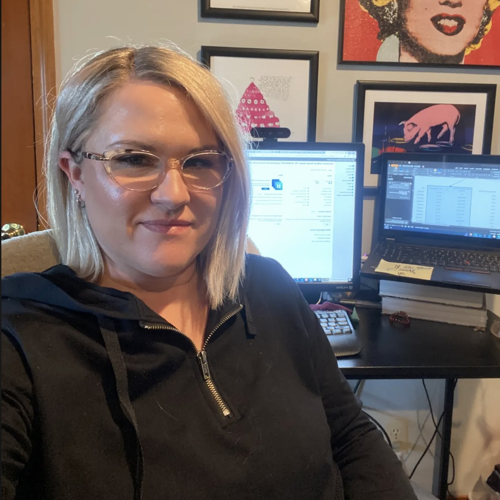

Enterprise UX and design systems, with recent depth in AI-agentic products.
I’ve owned admin UX for a brand-new product from scratch, and defined what AI agents should and shouldn’t do on a user’s behalf. I prototype in code, not just decks, and care about leaving teams better than I found them.

Outside of work, I’m happiest near water and mountains, which makes Seattle a pretty great place to be. When I’m not out exploring, I’m usually working on my 100-year-old house, cooking, crocheting, or finding some other excuse to make something with my hands. And when I want to completely unplug, I’m probably on my Switch or watching more reality TV than I’d care to admit.
AI & agentic systems
Enterprise product depth
Strategy & leadership
“Anyone would be lucky to have Amanda on their team. She’s the rare leader who elevates the work and the people at the same time.”
“Your leadership in laying the foundational design for IRG was nothing short of masterful… I’ve learned so much from watching how you navigate ambiguity with grace and how you advocate for both users and design integrity without ever losing momentum.”
“You deserve a medal for the gauntlet you ran on this agent sprint… you had the most challenging set of conditions to address… your tenacity and commitment were the only reason that work was delivered at all.”
“You have the amazing ability to think across both UX and business goals… Your persistence and progress in driving the Cloud PC integration strategy, helping build consensus and creating clarity on the path forward has been impressive.”
“Amanda keeps amazing me with the amount of experience, matureness, and eagerness shaping the future of our Windows 365 product… she returns phenomenal designs afterward that do not need that many edits! A great partner.”
“I can give you a tricky set of requirements (often driven by exec, which can be particularly tricky) and have confidence the right design will be built… which takes a load of pressure off me.”
Verbatim excerpts from written peer feedback. Sources available upon request.